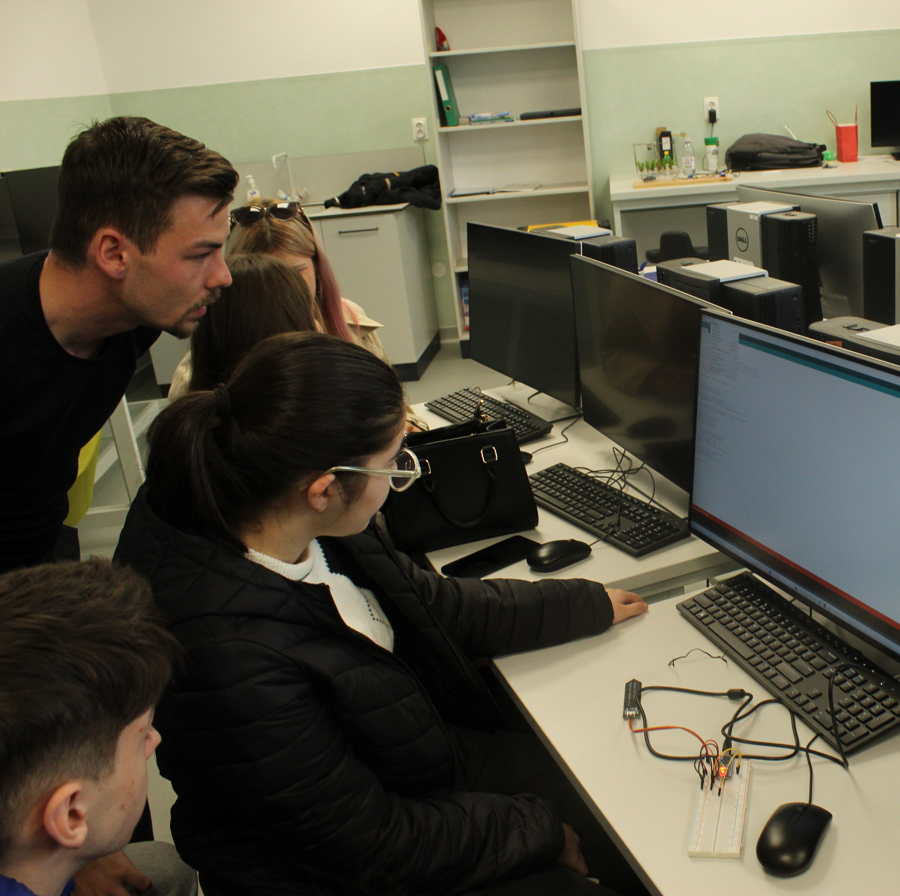
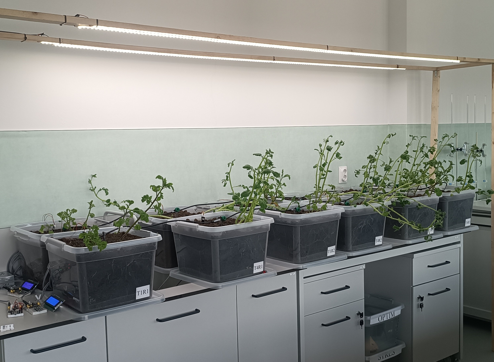
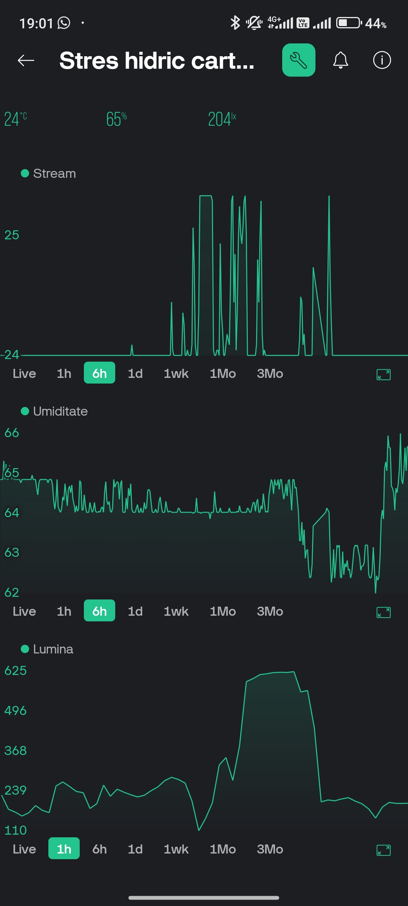
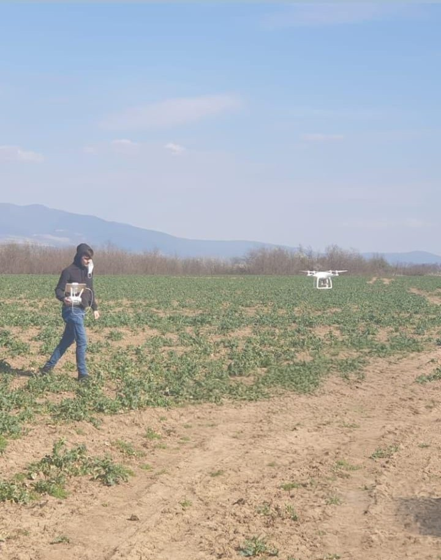

Platformă de Predicție Multi-Risc pentru specia Malus domestica
Platforma de Predicție Multi-Risc pentru specia Malus domestica este un sistem de agricultură de precizie fundamentat pe o Arhitectură Neuro-Simbolică. Aceasta transformă datele brute de microclimat și prognoză în decizii agronomice proactive, operând printr-un pipeline de date pe 5 niveluri. Sistemul separă rigurozitatea matematică de capacitatea de sinteză: procesează determinist telemetria prin modele validate științific (Nivelul Simbolic), iar ulterior utilizează un motor de Inteligență Artificială Generativă (Nivelul Cognitiv) pentru a formula recomandări în limbaj natural. Platforma anticipează presiunea patogenilor, dinamica dăunătorilor și impactul stresului abiotic, calibrând constant predicțiile printr-o buclă de validare din teren (Ground-Truth). Datele sunt distribuite în 4 module de expertiză, permițând optimizarea ferestrelor de intervenție, managementul integrat al livezii și reducerea amprentei chimice.

Atelier ArduFarm
Atelierul ArduFarm din cadrul evenimentului EduLabFarm transformă elevii de liceu în arhitecți ai tehnologiei agricole, explorând convergența dintre electronică și agronomie. Prin implementarea a patru sisteme critice — monitorizarea microclimatului, analiza calității aerului, automatizarea irigațiilor și senzori termici de precizie — participanții învață să utilizeze microcontrolerele Arduino și NodeMCU pentru a optimiza resursele unei ferme moderne. Este o experiență practică care dezvoltă competențe esențiale în programare, electronică și gândire logică, pregătind tinerii pentru viitorul digitalizat al industriei agro.




Platformă de pre-screening pentru fenotiparea stresului hidric la cartof
Proiectul a vizat dezvoltarea și validarea unei platforme de fenotipare IoT cu costuri reduse, destinată pre-screening-ului toleranței la secetă la cartof. Sistemul integrează controlul automatizat al irigării, gestionat printr-o arhitectură Arduino cu senzori capacitivi multiplexați (6 senzori/linie) — și monitorizarea microclimatului în timp real via ESP8266. Un algoritm de tip mașină de stări asigură menținerea precisă a pragurilor de umiditate a solului (60% optim vs. 35% stres). Validarea experimentală a confirmat capacitatea platformei de a induce un stres hidric reproductibil și de a discrimina statistic răspunsurile fiziologice (fracția de substanță uscată) între genotipuri contrastante. Soluția dezvoltată reprezintă un instrument metodologic robust și scalabil, optimizând selecția preliminară a soiurilor anterior testărilor agronomice de câmp.


Tehnologii 4.0 (FDI 2024 F0060; FDI 2025 F0383)
Proiectul a avut ca scop creșterea competitivității bazei de practică a studenților prin inovare și integrarea tehnologiilor specifice Agriculturii 4.0 la standarde de performanță. Activitatea s-a bazat pe instruirea practică în zona de topometrie și fotogrammetrie (UAV-uri, sisteme de ghidaj GPS, stație totală).


Prototipare solar inteligent
Proiectarea și construcția prototipului de solar inteligent a avut ca obiectiv demonstrarea integrării tehnologiilor IoT managementul spațiilor protejate. Sistemul este coordonat de un microcontroler cu conectivitate Wi-Fi, care achiziționează în timp real date privind microclimatul prin intermediul unor senzori. Parametrii sunt transmiși către o interfață mobilă dezvoltată în platforma Node-RED, care oferă telemetrie și permite controlul de la distanță al proceselor. Partea de execuție cuprinde automatizarea irigării printr-o micropompă. Acest model funcțional validează capacitatea de a proiecta o arhitectură hardware-software completă, de la preluarea datelor brute la acționarea mecanică și monitorizarea în cloud, aplicabilă direct în agricultura de precizie.


Inginer Agronom - Consultanță agricolă
Coordonarea operațiunilor tehnice de teren și gestionarea conformității agricole. Activitatea a inclus ridicări topografice, inventarierea și trasarea parcelelor utilizând echipamente GPS de precizie, precum și monitorizarea aeriană a stării de vegetație prin intermediul tehnologiei UAV. Pe plan tehnologic și administrativ, au existat activități de elaborare a fișelor tehnologice pentru culturile fermei și întocmirea rapoartelor oficiale pentru instituțiile publice (APIA, Camere Agricole, Primării), garantând alinierea operațiunilor din teren cu cerințele legale de finanțare și reglementare.

Proiectare si construcție de sisteme electrotehnice
Gestionarea integrală a fluxului de dezvoltare hardware pentru sisteme de automatizare, de la proiectarea schemelor și rutarea cablajelor imprimate (PCB), până la asamblarea, testarea și calibrarea prototipurilor fizice. Portofoliul de proiecte include module telemetrice pentru monitorizarea parametrilor de mediu, sisteme de management al puterii și plăci electronice fabricate la standarde industriale. Această expertiză fundamentală la nivel de componentă asigură baza tehnică necesară pentru construirea, integrarea și depanarea echipamentelor mecatronice și IoT personalizate, oferind independență în implementarea soluțiilor hardware de precizie pentru Agricultura 4.0.


Implementarea și testarea unui sistem automatizat de irigare prin picurare (Lucrare de Diplomă)
Lucrarea a vizat proiectarea, implementarea și testarea unui sistem automatizat de irigare prin picurare pentru culturi legumicole (salată și ridiche de lună). Automatizarea a fost realizată cu ajutorul unui microcontroler Arduino UNO conectat la senzori de umiditate a solului. Sistemul a fost programat să declanșeze o pompă de apă printr-un releu atunci când umiditatea substratului scădea sub pragul setat și să o oprească imediat la atingerea acestei valori, debitul apei fiind optimizat printr-un modul step-down LM2596. Pe parcursul ciclului de vegetație, instalația a funcționat continuu, validând eficiența irigării de precizie prin optimizarea consumului de apă și inhibarea dezvoltării buruienilor pe intervalele dintre rânduri, comparativ cu metodele de udare convenționale. În plus, a fost consemnat si discutat un fenomen de hidrotropism la nivelul radacinilor.


Finalist FameLab
Finalist în cadrul competiției internaționale de comunicare a științei FameLab, organizată de British Council România, a vizat evaluarea abilităților de a sintetiza și expune concepte academice complexe într-un format strict de 3 minute. Tema prezentată a explorat un domeniu interdisciplinar de biofizică vegetală: influența frecvențelor acustice asupra dezvoltării plantelor. Argumentația a explicat mecanismele prin care undele sonore pot declanșa răspunsuri fiziologice la nivelul țesuturilor vegetale.